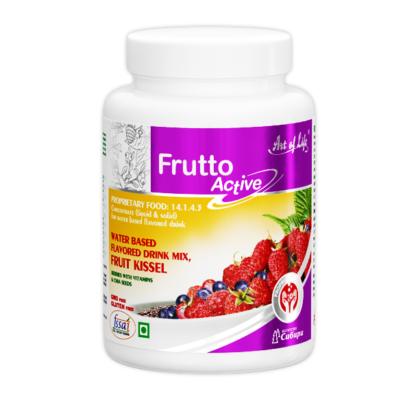
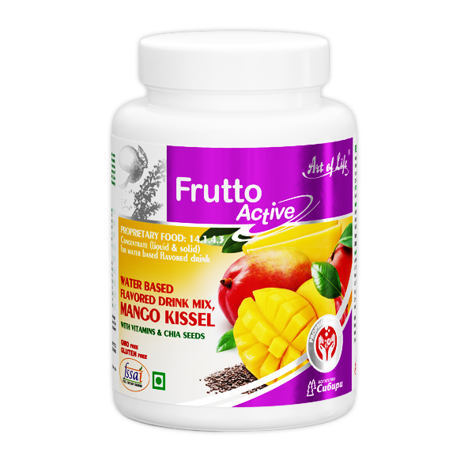

FUNCTIONAL NUTRITION
These are instant food products with ideal balanced formulations, fortified with vitamins, micro- and macro elements and other ingredients of natural origin. Intended for daily power and health maintenance, they provide essential phytonutrients for body.
ABOUT KISSEL
Kissel is a traditional thick and nutritious drink of Siberian people. Siberians were making this drink for the purpose of strengthening of the body, vitality and health care. Natural berries and fruits provide unique and rich taste of Kissel.



Berries Kissel
Real Siberian flavor!
Berries of Taiga, like blueberries, raspberries and strawberries provide fantastic flavorful taste
of kissels. These wild berries grow in the Taiga even at very low temperatures, so they are
especially enriched with vitamins and antioxidants. Chia seeds give specialty to this product,
they provide full-fledged satiety feelings without any excess calories.



Mango Kissel
It is reputed that mango is a natural antioxidant, because this fruit helps to eliminate tense
anxiety, get rid of stress and be happy, Also mango is recognized as an aphrodisiac, works
in both of men and women’s body and affect them. Mango is a very rich source of vitamins
and amino acids, which boost your mood and increase your vitality. Chia seeds give
additional nutritional value and a full-fledged sense of satiety without any excess calories.
 compress1.png)